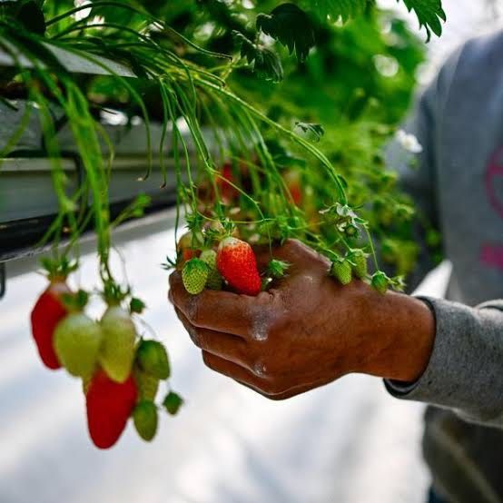

Confiture de fraises
du Tarn-et-Garonne


⟹ Desserts & Douceurs ⟸
La confiture de fraises est sans doute la plus populaire des confitures françaises, mais dans le Tarn-et-Garonne, elle a une saveur particulière : celle des fraises cultivées dans les vallées fertiles du Tarn, de l’Aveyron et de la Garonne, au cœur d’un département que l’on surnomme le « verger du Sud-Ouest ».

Le Sud-Ouest est le premier bassin de production de fraises en France, porté par le Lot-et-Garonne et la Dordogne. Le Tarn-et-Garonne y occupe une place plus discrète mais bien réelle : de nombreuses exploitations, notamment autour de Montauban et le long de la Garonne, cultivent la fraise en plein champ, sous tunnel ou sous serre.
La fraise de nos jardins est elle-même une histoire de voyage : elle est née au XVIIIe siècle du croisement entre la fraise de Virginie et la fraise du Chili, rapportée en France par l’explorateur Amédée-François Frézier en 1714. Les fraisiers des bois, eux, étaient cueillis depuis l’Antiquité.
Les producteurs du Sud-Ouest cultivent surtout des variétés parfumées : la Gariguette, allongée et acidulée, créée par la recherche agronomique française dans les années 1970 ; la Ciflorette ; la Charlotte ; ou la Mara des bois, au goût de fraise des bois, remontante jusqu’à l’automne.
La saison commence dès mars sous abri et bat son plein d’avril à juin. C’est à ce moment que la confiture prend tout son sens : elle permet de conserver la récolte, notamment les fruits très mûrs ou petits calibres moins faciles à vendre frais.
La confiture familiale s’est généralisée au XIXe siècle, quand le sucre de betterave a rendu le sucre bien plus abordable. Dans les fermes du Tarn-et-Garonne, comme partout en France, la bassine en cuivre ressortait à chaque saison de fruits : fraises au printemps, prunes et reines-claudes en été, chasselas et pommes à l’automne.
Une bonne confiture de fraises exige peu d’ingrédients mais beaucoup de soin : des fruits cueillis à maturité, une macération qui préserve leur forme, une cuisson courte pour garder la couleur rouge vif et le parfum. Le jus de citron apporte l’acidité et aide à la prise, la fraise étant pauvre en pectine.
Aujourd’hui, la vente directe et la cueillette à la ferme se sont beaucoup développées dans le département. Les confituriers artisanaux, les producteurs et les épiceries fines proposent des confitures de fraises locales, souvent associées à d’autres produits régionaux.
Il n’existe pas de signe officiel de qualité propre aux fraises ou aux confitures du Tarn-et-Garonne : leur valeur repose sur la proximité, la fraîcheur des fruits et le savoir-faire des producteurs. Une confiture simple et généreuse, qui résume le printemps du Sud-Ouest.
Fraise-rhubarbe : l’acidité de la rhubarbe équilibre la douceur de la fraise, version de printemps très appréciée.
Fraise à la violette de Toulouse : quelques fleurs ou un sirop de violette, clin d’œil à la grande voisine toulousaine.
Fraise-melon du Quercy : assemblage d’été qui réunit deux fruits emblématiques du département.
Mara des bois : confiture d’automne, au parfum intense de fraise des bois.
La confiture de fraises se trouve toute l’année, mais c’est au printemps, dans les fermes et sur les marchés, qu’on découvre les meilleures productions locales.
Montauban marchés de la ville et producteurs de fraises de la périphérie, en vente directe.
Vallée de la Garonne (Castelsarrasin, Moissac) exploitations fruitières et cueillette à la ferme au printemps.
Marchés de producteurs de pays à la belle saison, les marchés des villages proposent fraises et confitures artisanales.
Épiceries fines et boutiques de terroir vitrines des confituriers du département, à Montauban comme dans les bastides.